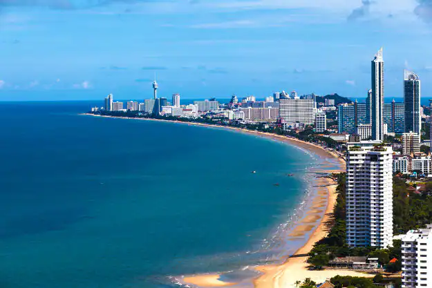
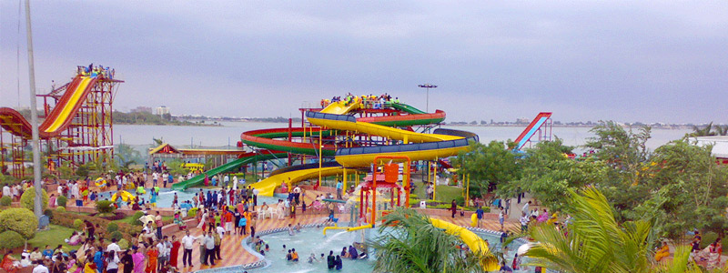
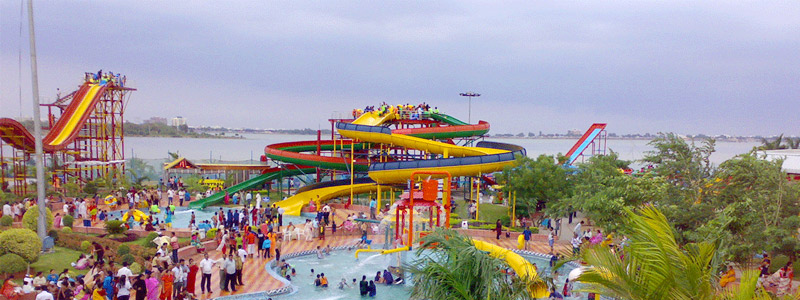
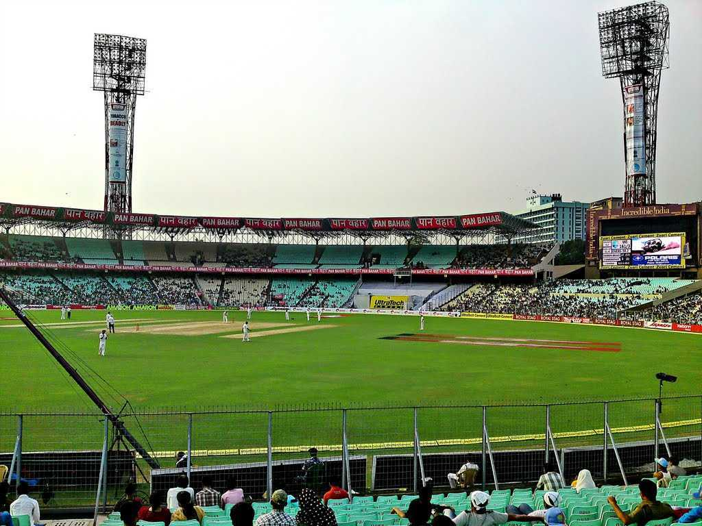
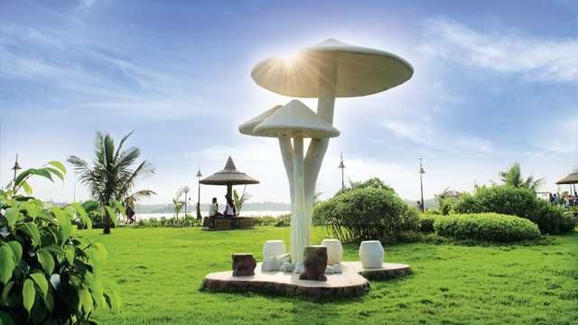
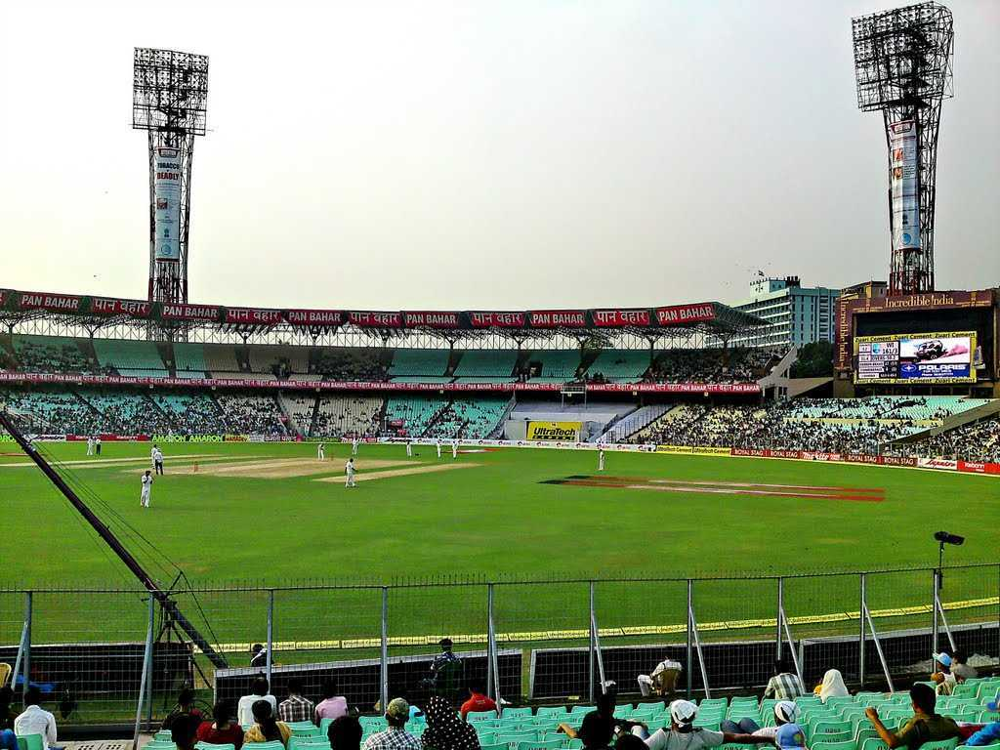
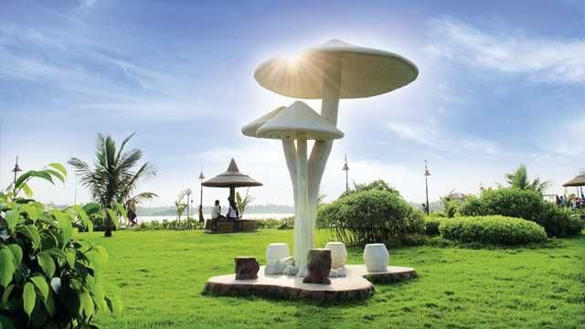

Must Visit Destinations
Spiti Valley
Spiti valley is famous for its natural beauty and cultural heritage. Tabo monastery is one of the most prominent attractions in Spiti.

Delhi
One of the most beautiful cities in India, Delhi offers a mix of history that feels alive in Old Delhi. As the capital of the Mughal empire, the city has some of the world's most awe-inspiring forts and structures.


Agra
Agra is a city on the banks of Yamuna river in Uttar Pradesh. Popular as the city of Taj Mahal, Agra has more to offer than just the wonderful Taj. It is home to 3 UNESCO World Heritage Sites.

Jaipur
Jaipur is famous as Pink City of India and it is also the Capital City of Rajasthan. Jaipur is famous for Rajasthani traditional Jewelry, traditional fabrics and handicrafts, and also for traditional rajasthani cuisine.
Mumbai
Mumbai is India's biggest and most populous city. Apart from being the country's financial capital, Mumbai has earned several other titles like 'the land of dreams' and the city that never sleeps.


Hyderabad
A vibrant city with the imposing Charminar at its heart, Hyderabad, the capital of Telangana, is a potpourri of history, cuisine and eclectic experiences. While its Old City area is an impressive heritage haven with iconic monuments.
 


Kolkata
Almost like a colonial matriarch nurturing her heritage roots, the city of Kolkata, the capital of West Bengal, holds culture and tradition close to its heart.

 




Chennai
Ancient temples, vibrant arts, natural wonders and a bustling culinary scene make Chennai, the capital of Tamil Nadu, one of the most popular tourist destinations in the southern fringes of the country.


Varanasi
One of the oldest living inhabitations of the world, the sacred city of Varanasi or Benaras, nestled on the banks of the holy Ganges river, has been attracting pilgrims for centuries.


Bengaluru
A city catering to almost all the creature comforts of a metropolitan, a pleasant year-round weather and a bustling shopping and culinary scene, Bengaluru, the capital of Karnataka, is the perfect destination to mix work with pleasure.